1911任务真实观测审计
完整报告图中标记不是人工像素GT，不宣称可见性/识别准确率。
124 Car: The grat car that is 3rd from the right in the 20th row of cars in the parking lot behind the One Stop Building, when viewed aerially with the long side of the One Stop building to the right.
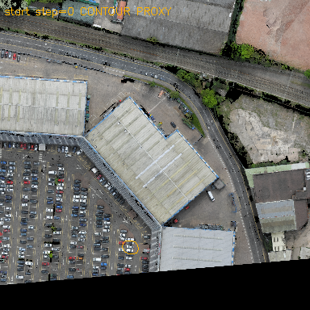
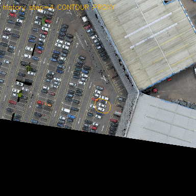
橙线是未核验Contour投影，点击查看原始384px；历史时刻按事后最大支持面积展示，不用于推理/视点选择。
164 Car: This is a black colored car. There is a green car parked against the wall of the One Stop building. this car is in the parking row that comes in line with the green car. This car has a blue car on one side and a white car on the other. The parking space in front of it is empty, with a black car on one side and a white car on the other.
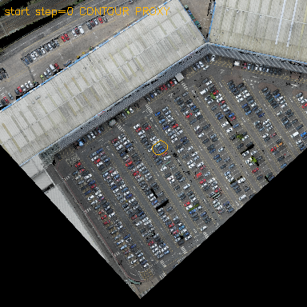
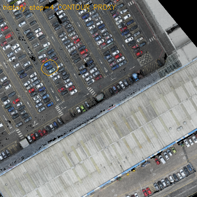
橙线是未核验Contour投影，点击查看原始384px；历史时刻按事后最大支持面积展示，不用于推理/视点选择。
43 Car: A black car that is across from a group of three cars, in a extended parking lot, that starts from St Teresa's court building and ends on Celine Grove, parked in front of a white building with a light gray roof and a blue door
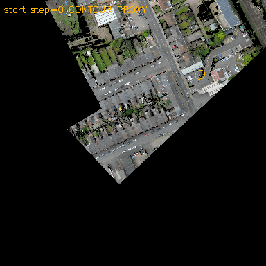
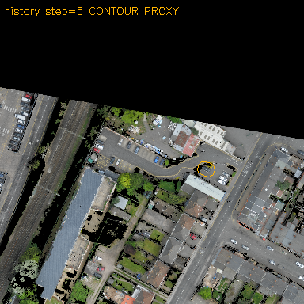
橙线是未核验Contour投影，点击查看原始384px；历史时刻按事后最大支持面积展示，不用于推理/视点选择。
160 Car: The gray car that is 17th from the right in the 4th row of cars in the large parking lot behind the One Stop Building, when viewed aerially with the long side of the One Stop Building to the right.
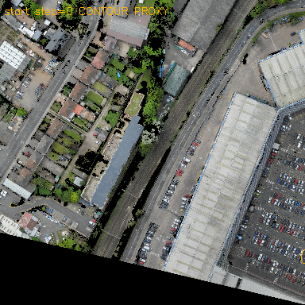
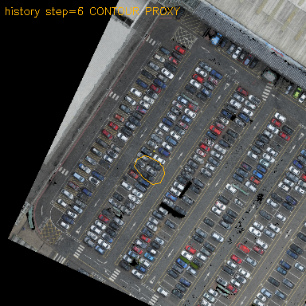
橙线是未核验Contour投影，点击查看原始384px；历史时刻按事后最大支持面积展示，不用于推理/视点选择。
947 Building: A brownish red building with a brown roof in between the Erasmus building and the dokett building in front of a rectangular grass field off Queens Lane
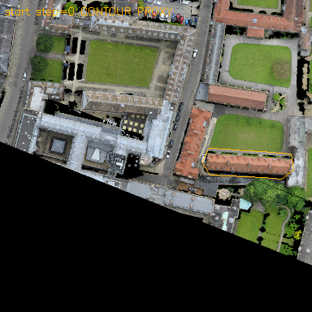
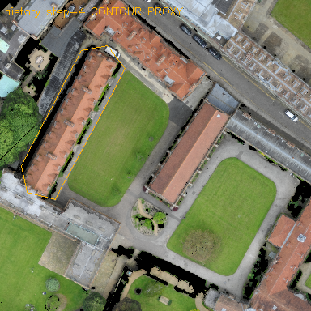
橙线是未核验Contour投影，点击查看原始384px；历史时刻按事后最大支持面积展示，不用于推理/视点选择。
974 Building: The building next to the Fitzwilliam House that has a gray roof and a red van behind it.
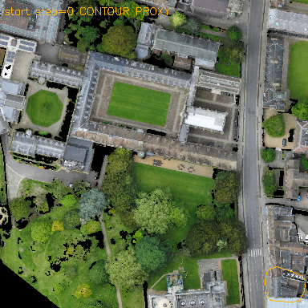
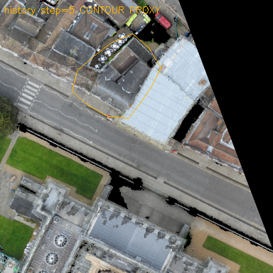
橙线是未核验Contour投影，点击查看原始384px；历史时刻按事后最大支持面积展示，不用于推理/视点选择。
1 Building: The long row of gray houses with cars parked in front of them along Leslie Road.
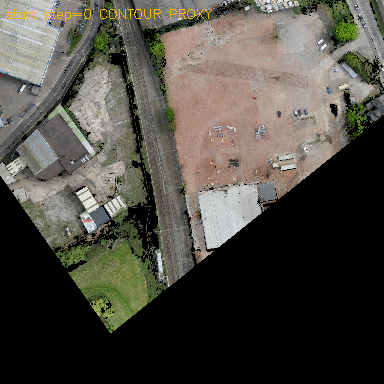
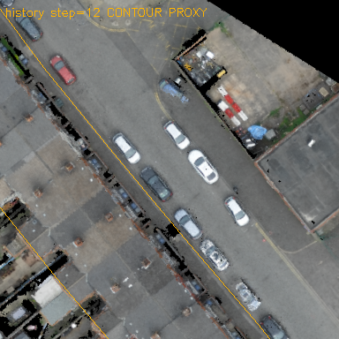
橙线是未核验Contour投影，点击查看原始384px；历史时刻按事后最大支持面积展示，不用于推理/视点选择。
2 Building: the row of brown houses along Leslie Road, across the street from a gray building.
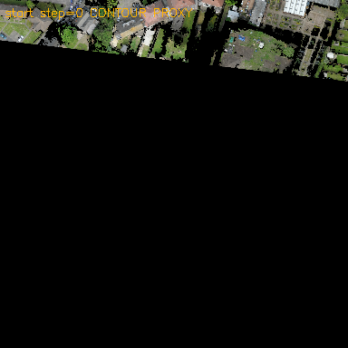
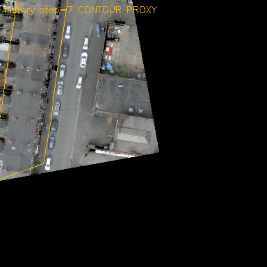
橙线是未核验Contour投影，点击查看原始384px；历史时刻按事后最大支持面积展示，不用于推理/视点选择。